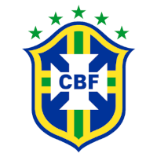

PERÍODO FIFA - MARÇO 2023 (Sublinhado)
MARROCOS x BRASIL - 25.03.2023 - Tânger-Marrocos (Sublinhado)
ATLETAS CONVOCADOS
Convocação: 03.03.2023 | Apresentação: 20.03.2023
Tabela
APELIDO CLUBE
GOLEIROS
EDERSON Manchester City Football Club
MYCAEL Club Athletico Paranaense
WEVERTON Sociedade Esportiva Palmeiras
LATERAIS DIREITOS
ARTHUR SAF América Futebol Clube
EMERSON Tottenham Hotsput Football Club
LATERAIS ESQUERDOS
ALEX TELLES Sevilla Futbol Club
RENAN LODI Nottingham Forest Football Club
ZAGUEIROS
IBAÑEZ Associazione Sportiva Roma S.p.A.
EDER MILITÃO Real Madrid Club de Fútbol
MARQUINHOS Paris Saint Germain Football Club
ROBERT RENAN Football Club Zenit St Petersburg
MEIO-CAMPISTAS
ANDRÉ Fluminense Football Club
ANDREY SANTOS Vasco da Gama SAF
CASEMIRO Manchester United Football Club
JOÃO GOMES Wolverhampton Wanderers Football Club
LUCAS PAQUETÁ West Ham United Football Club
RAPHAEL VEIGA Sociedade Esportiva Palmeiras
ATACANTES
ANTONY Manchester United Football Club
RICHARLISON Tottenham Hotsput Football Club
RODRYGO Real Madrid Club de Fútbol
RONY Sociedade Esportiva Palmeiras
VINICIUS JUNIOR Real Madrid Club de Fútbol
VITOR ROQUE Club Athletico Paranaense